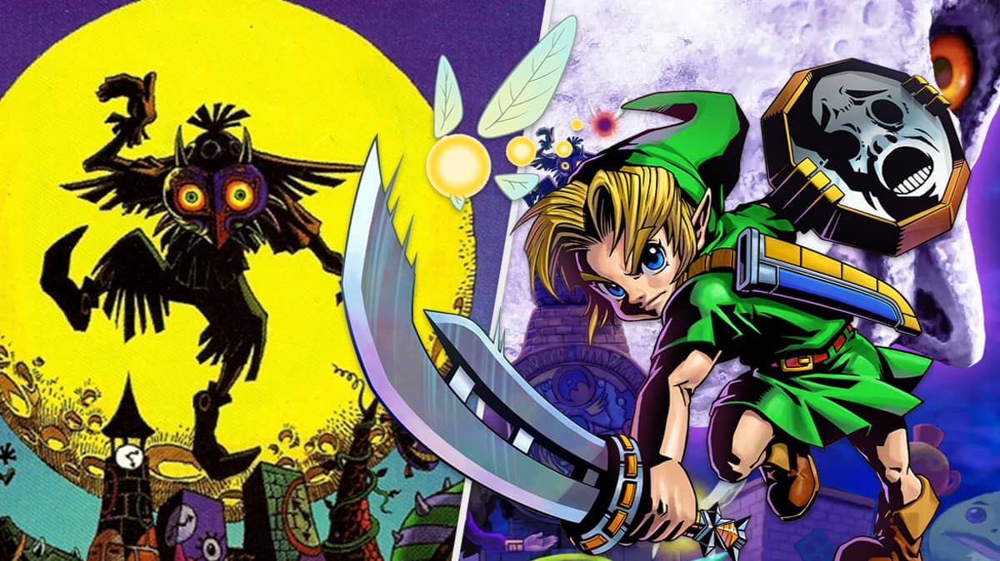

About This Site
This is a link. Majora's Mask is a critically acclaimed video game that was released in 2000 for the Nintendo 64 console. The game is part of the Legend of Zelda series and is known for its unique gameplay mechanics and dark, eerie atmosphere. Majora's Mask features a time loop mechanic, where the player has only three days to complete the game before the world is destroyed by a falling moon. The player must navigate the land of Termina, interact with various characters, and collect masks that grant them special abilities to aid in their quest. Majora's Mask is my favorite video game of all time. When I was a kid I was very confused by the game and was never able to make it very far, however I was very intrigued by the quests I would start and never finish. When I got older I revisted the game time and time again and fell in love with it.
This is a link. Majora's Mask is a critically acclaimed video game that was released in 2000 for the Nintendo 64 console. The game is part of the Legend of Zelda series and is known for its unique gameplay mechanics and dark, eerie atmosphere. Majora's Mask features a time loop mechanic, where the player has only three days to complete the game before the world is destroyed by a falling moon. The player must navigate the land of Termina, interact with various characters, and collect masks that grant them special abilities to aid in their quest.